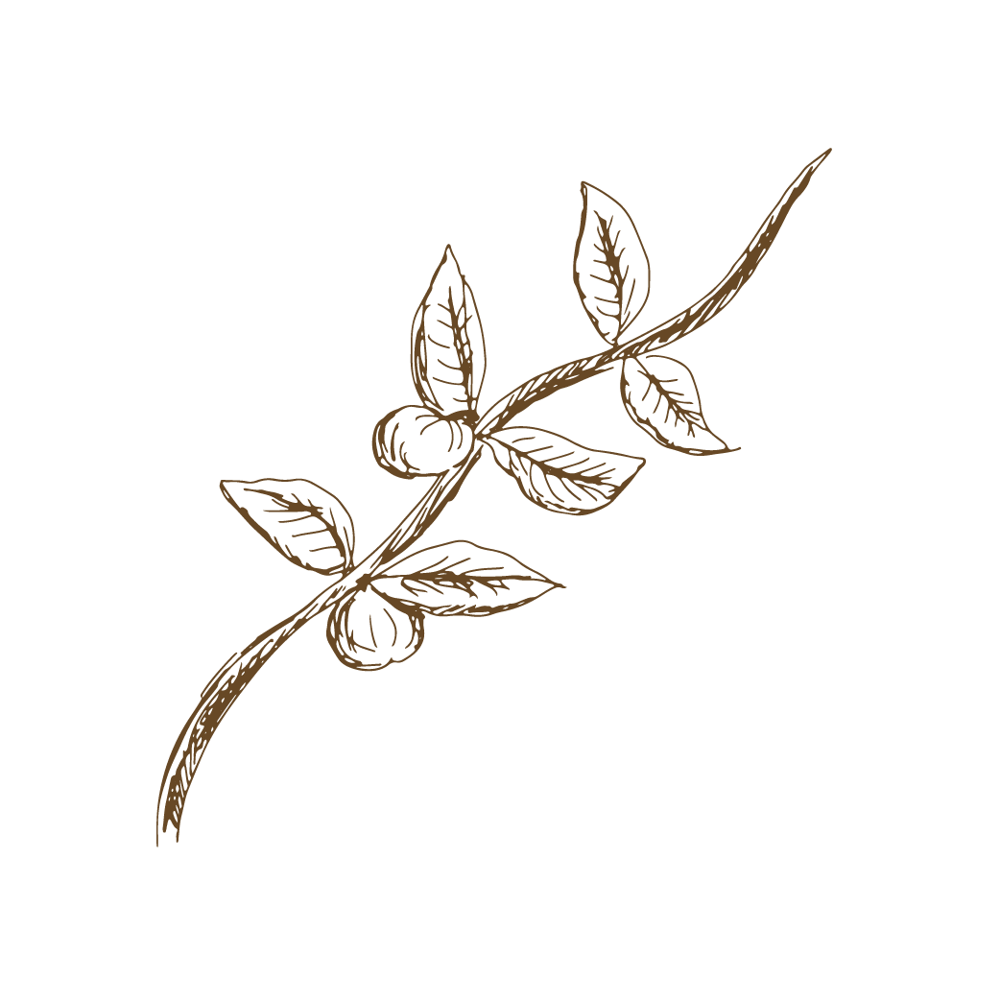

THE SEED
First, seeds of the coffee tree (which is a tropical evergreen shrub)
are planted. The plant yields berries that are similar to cherries in that they have a
small seed in the middle – and this seed is what we know as the coffee bean! A coffee
tree takes about 5 years to fully develop, and it must be grown in specific conditions and
soil, hence the majority of coffee being grown in South America/the Caribbean